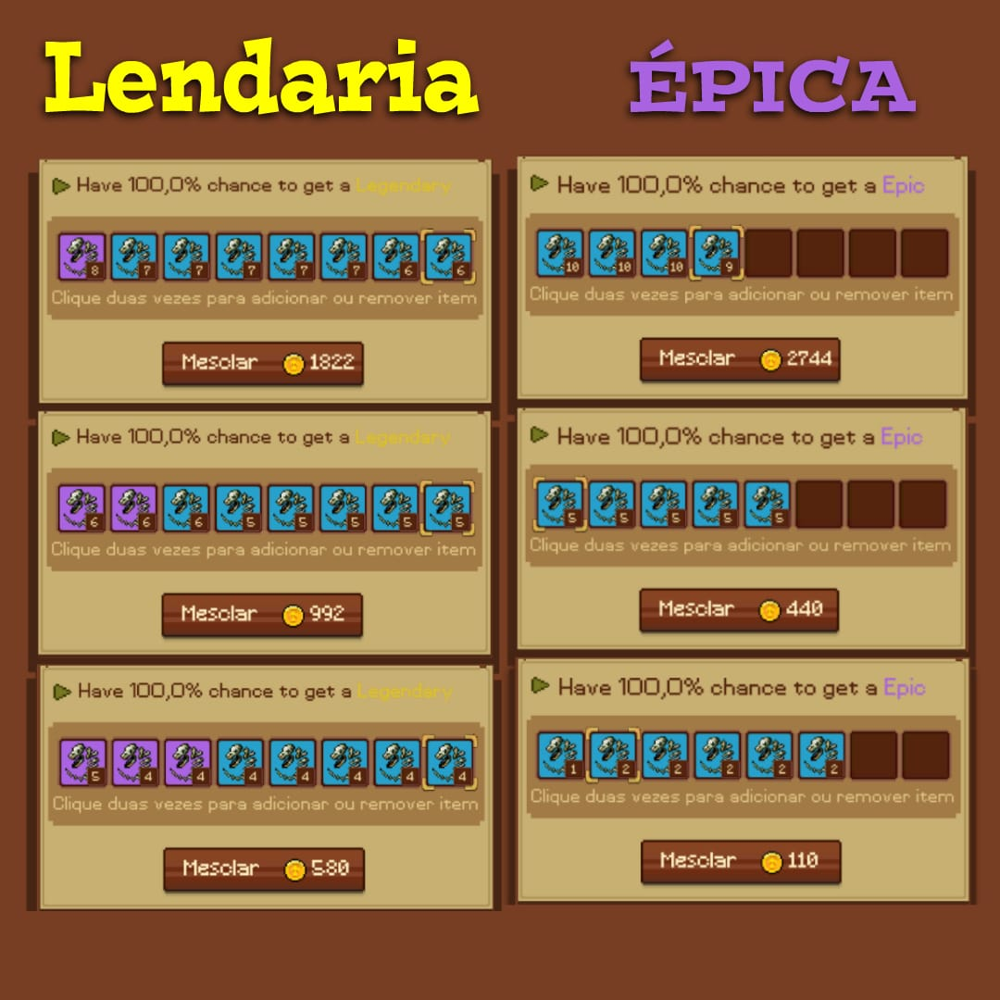
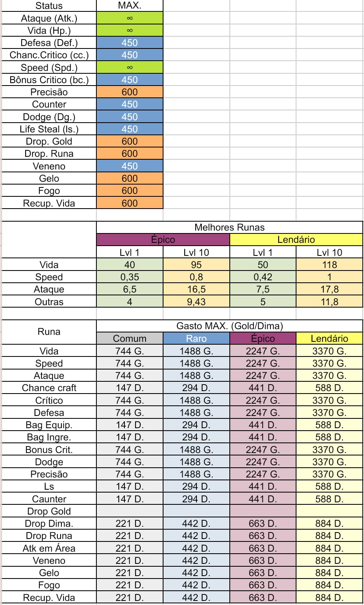
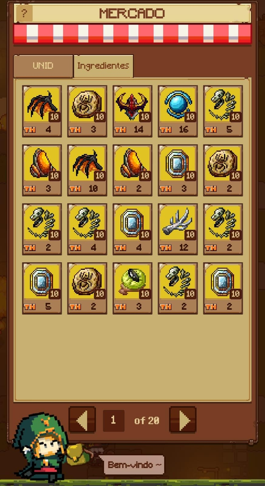
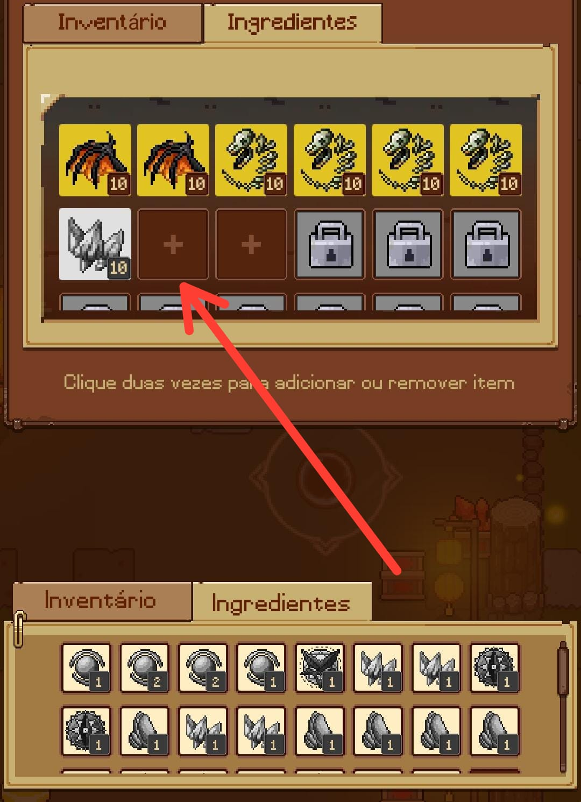
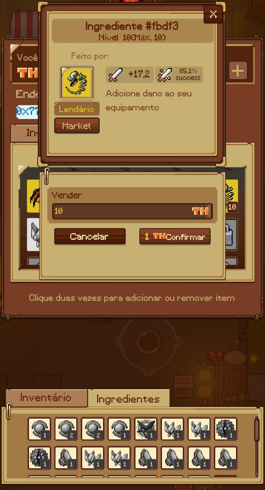
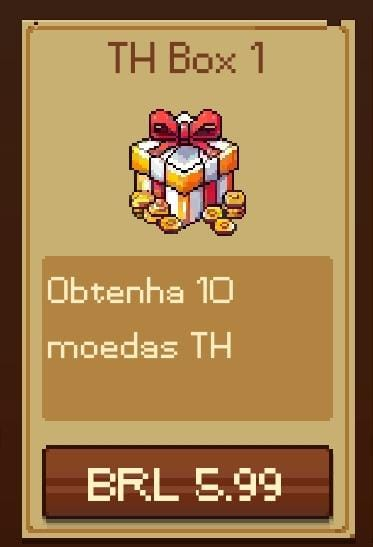

Estas são as maneiras mais eficazes de fazer a mescla no NPC Donx

obs: Note que quanto mais runas roxas forem utilizadas, menos gold será gasto.
Então você pode utilizar seu ouro fazendo mesclas com MAIS ingredientes roxos quando estiver com pouco ouro, e MENOS ingredientes roxos quando estiver com muito ouro.
GUIA DE INGREDIENTES:
Esta próxima imagem contém os atributos existentes até o momento no Treasure Hunter, e também seus valores máximos.

Acima podemos ver quanto será gasto para upar a runa(ingrediente) pro nível máximo(10).
Note também que os valores dos ingredientes são variáveis, sendo assim, caso esteja a procura de runas mais fortes para craftar um item poderoso, no meio da tabela estão os valores máximos de cada bonus!
Guia para vender runas no Mercado:

Quais runas podem ser comercializadas no mercado?
R: Somente runas lendárias que estão no nível 10.
Como faço para vender runas?
Para vender suas runas você deve:
1° upar sua runa lendária pro nível 10.
2° guardar sua runa na carteira de ingredientes.

3° selecionar a runa e o valor.

obs: ao colocar uma runa no mercado, é descontado uma taxa de 1 TH que não será reembolsado caso venha a cancelar a oferta.
Que papo é esse de depósito mínimo???
Quando alguém falar que existe depósito mínimo para conseguir utilizar o market, ela está querendo dizer em resumo
que para que você possa ter espaço na carteira de ingredientes, é necessário pagar um valor crescente de 2ths para liberar cada espaço:
Dessa forma:
1° slot = 2ths
2° slot = 4ths
3° slot = 6ths
4° slot = 8ths
etc...
Lembrando que para criar uma oferta de item ou de ingrediente, é necessário pagar uma taxa de 1th.
Sendo assim, o recomendado é que todo player compre pelo menos o pacote mais barato(R$5,99).
